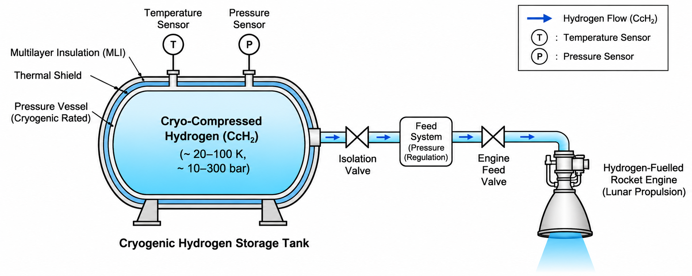
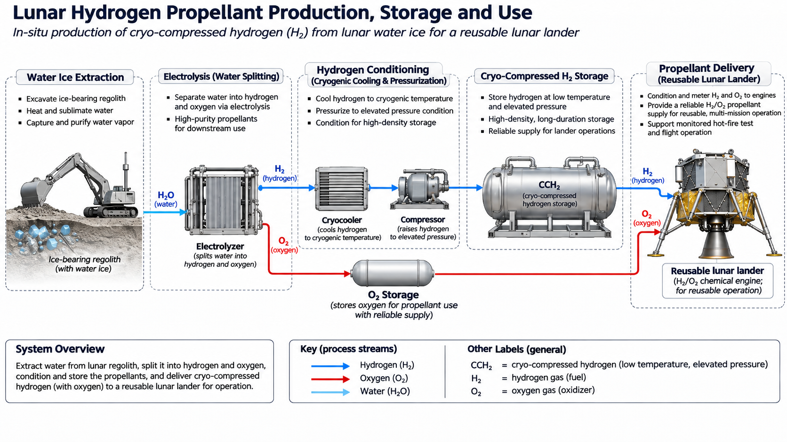

Cryo-compressed hydrogen for long-duration propulsion and a lunar propellant supply chain
Hydrogen is one of the most promising propellants for future space transportation, offering exceptional performance in chemical rocket engines. As exploration moves towards sustained operations on the Moon and beyond, storing hydrogen over long periods has become a pressing requirement — all the more so as In Situ Resource Utilisation (ISRU) opens the prospect of producing hydrogen from extraterrestrial resources, reducing dependence on propellant launched from Earth.
Long-term storage, however, is a significant engineering challenge. Liquid hydrogen must be held at around 20 K (−253 °C), demanding advanced thermal management to limit heat ingress and boil-off losses. High-pressure gaseous hydrogen avoids liquefaction, but at the cost of large storage volumes and heavy tanks and systems. Neither option has proved well suited to spacecraft, particularly over long mission durations.
Cryo-compressed hydrogen combines low temperatures with elevated pressures to increase hydrogen density while allowing greater flexibility in storage conditions. For long-duration missions, where tank mass, storage volume, refrigeration power and propellant availability must all be carefully balanced, this could offer a decisive advantage.
A central challenge is identifying an operating pressure and temperature that maintains adequate hydrogen density while limiting thermal losses, structural mass and energy consumption.

The research investigates the suitability of cryo-compressed hydrogen for chemical rocket propulsion, with particular emphasis on its role in a process chain on the lunar surface. Hydrogen extracted from lunar water ice could be processed, stored and supplied to rocket engines, supporting future reusable landers and other spacecraft.
The concept will be investigated experimentally through material characterisation under cryogenic conditions, development of propellant tank and feed system architectures, and propellant monitoring across extended storage periods. The aim is to demonstrate the viability of the approach through a hot-fire test.

This research forms part of a fully funded PhD within the UK Space Agency's Rocketry Research, Teaching and Training (R2T2) programme, led by PhD researcher Maleha Khan. By combining materials research, cryogenic tank development and experimental propulsion testing, the project aims to bridge the gap between hydrogen storage technology and its practical application in rocket engines.
Meet the team →CSPL welcomes enquiries from prospective research students, industry partners and fellow academics working across electric and chemical propulsion.